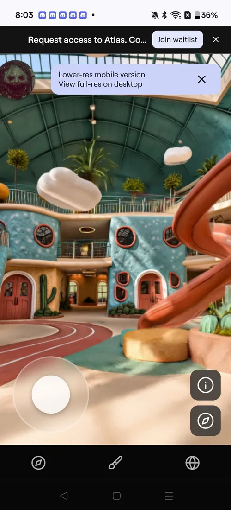
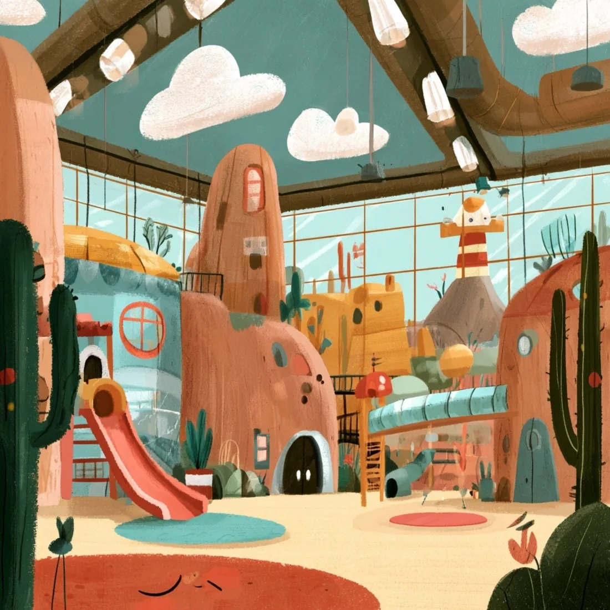
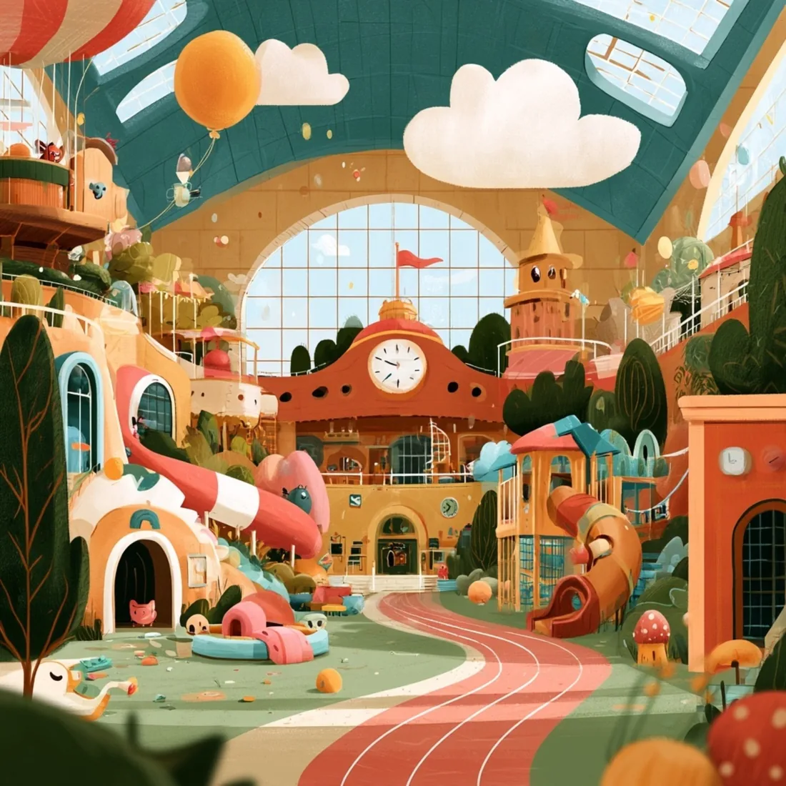
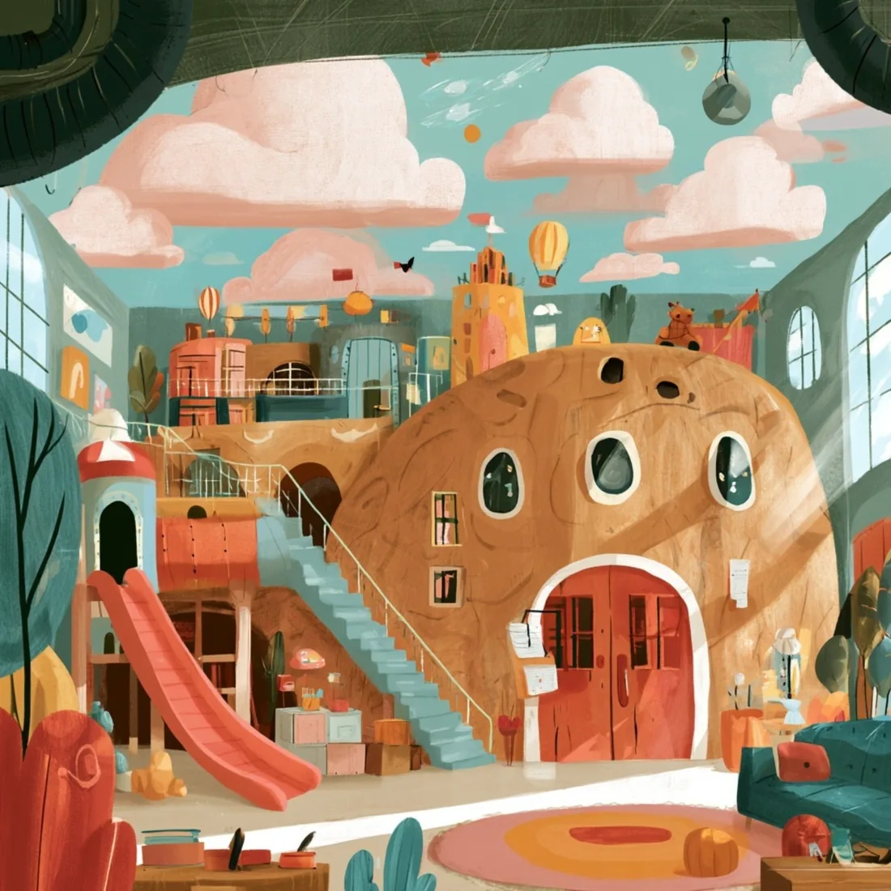
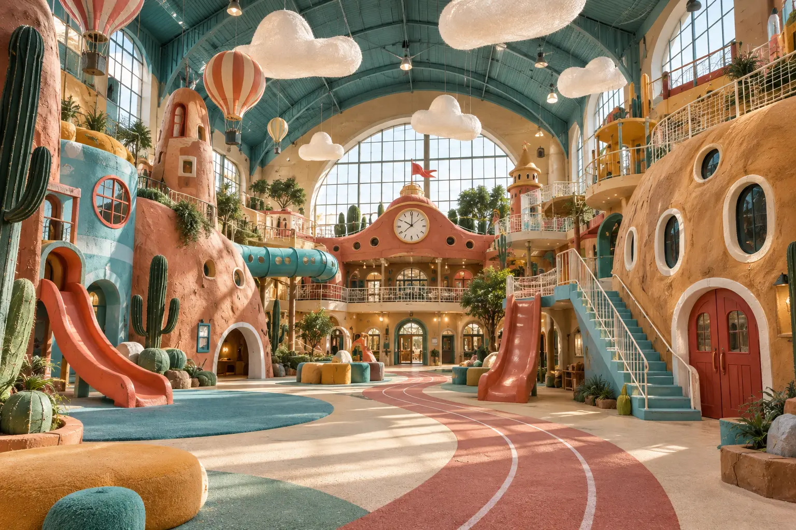
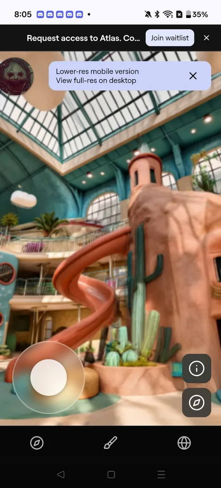
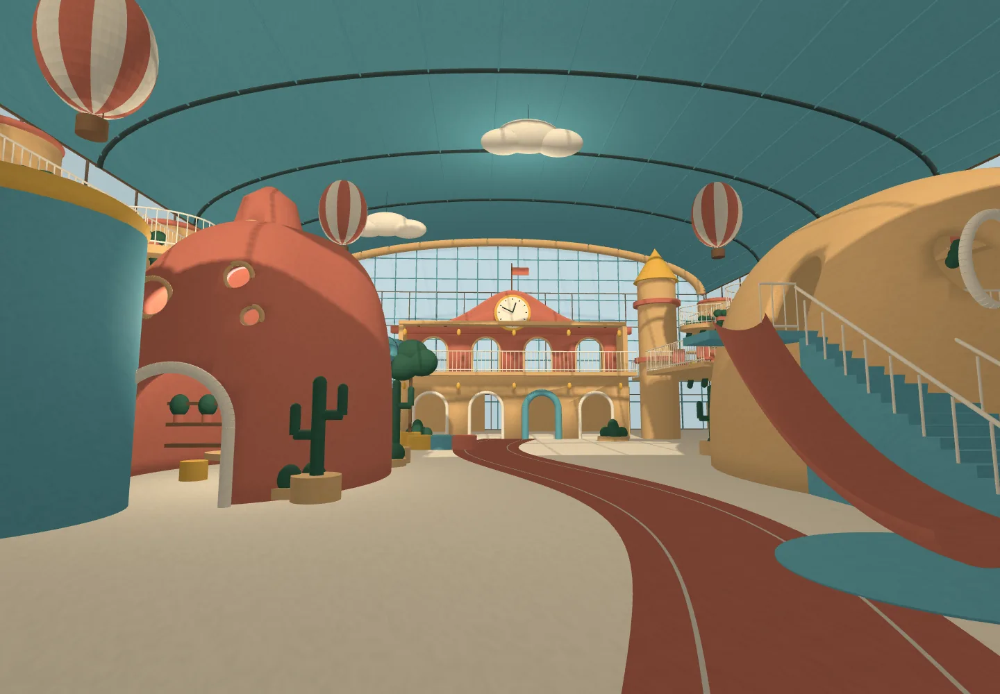
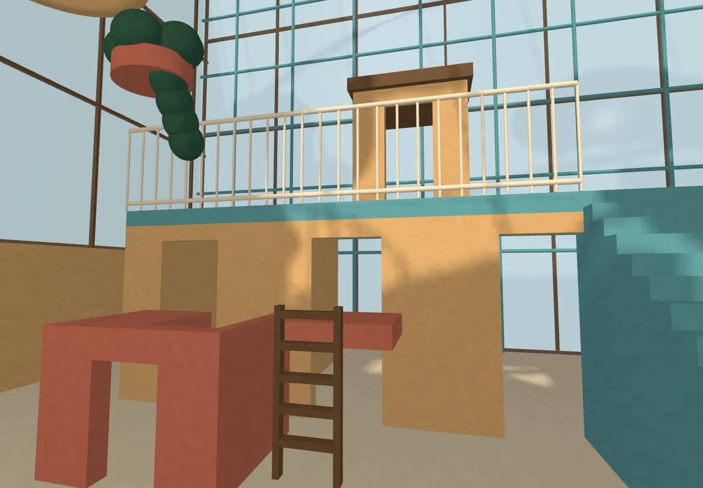
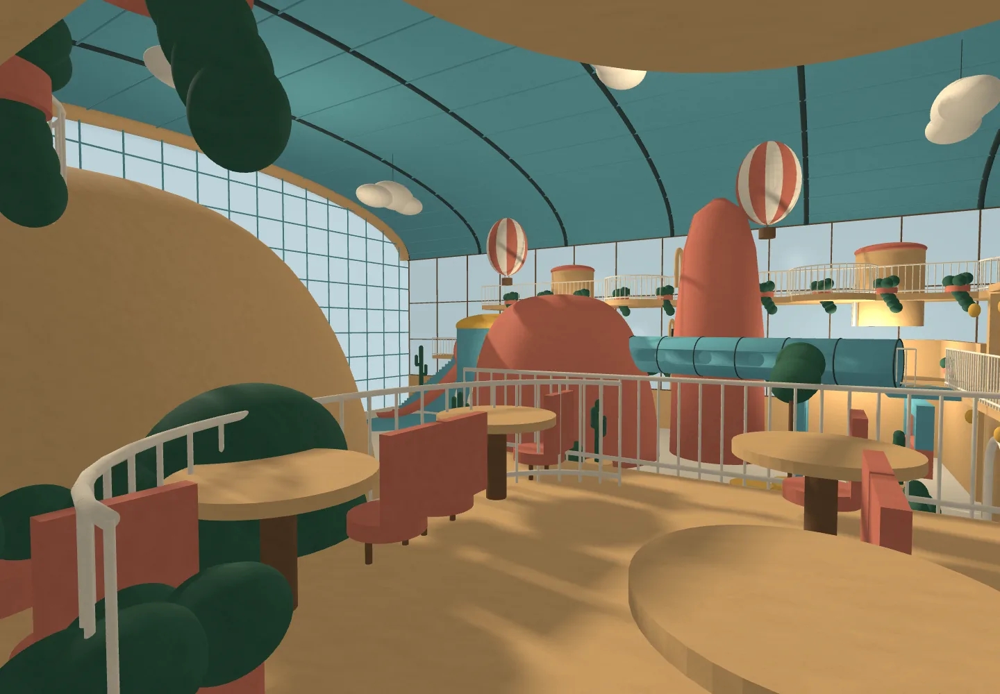

Marble: one area connected well
Where images overlapped, Marble produced a convincing continuous zone. The balconies and playful forms felt close to the concept, and the space could be explored instead of only viewed.
Three pictures were treated as different views of one enormous indoor playground. Could their painterly logic survive the trip into a connected 3D world?
The idea began with one instruction: pretend these images are all the same room, just seen from different places.
The paintings shared a turquoise vaulted roof, warm sculpted buildings, hanging clouds and balloons, slides, bridges and cactus-like scenery. They agreed emotionally, but they were not drawn from one measured floor plan. Turning them into a place meant deciding which clues were architecture, which were atmosphere, and what might exist beyond the frame.
Each image carried a different part of the imagined building: a dense slide village, a long central track leading to a clock facade, and a large climbing house with stairs. The goal was to read them as adjoining districts inside one hall.



A photoreal interpretation joined the strongest landmarks into one composition: terracotta and ochre playhouses, a turquoise tube bridge, clock facade, stairs, slides, viewing balconies and a winding coral path. This became the most useful anchor because it described the whole room at once.

Two approaches exposed opposite weaknesses. Image reconstruction kept the atmosphere but invented unstable space outside the camera coverage. Procedural CAD kept a stable coordinate system but simplified too much of the original character.

Where images overlapped, Marble produced a convincing continuous zone. The balconies and playful forms felt close to the concept, and the space could be explored instead of only viewed.

Beyond the photographed views, landmarks drifted, repeated or stretched. The pictures shared a style but not camera calibration or complete geometry. Marble had to guess every unseen corner.

The clock, path, domes, tube bridge and slides stayed fixed from every camera. But broad primitives replaced the uneven, layered architecture that made the paintings feel alive.

The CAD worked as a planning scaffold. It allowed rooms, stairs and galleries to be placed consistently even when their finish remained rougher than the art.
The missing spaces became part of the concept. They support children’s imagination and adult supervision, allowing performers, parents and staff to occupy the same world at different heights.
Small staged environments make scheduled entertainment feel like part of the village rather than a separate theater.
Terraces, crawl openings and ladders create a vertical play zone inspired by cliff architecture without copying sacred imagery.
Upper walkways become a parent café and flexible party area with sightlines into the playroom and access for performers.

Failure was useful here. Each attempt revealed a different requirement for turning an evocative image into an explorable place.
Concept and direction: Keith Borgholthaus. Images and models developed through iterative collaboration with generative tools. The CAD studies use assumed dimensions and are not construction documents.
Return to the Fun Haus museum